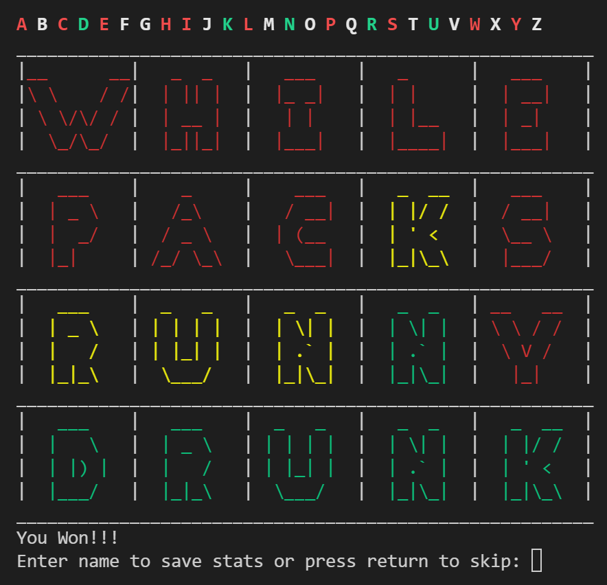

Dashboards
Weight Loss Tracking Dashboard
GitHub repo: cluffa/weight-loss-dash
This dashboard uses daily weight measurements in a linear regression model to identify trends. It also predicts when a goal weight will be met.
or Direct LinkMinimal Weight Loss Tracking Dashboard
GitHub repo: cluffa/weight-loss-dash-minimal
This is a simpler version of the first dashboard. It has only the important info; a scatter plot, a linear model, and the trend.
or Direct LinkIWF Weightlifting Event Results
GitHub repo: cluffa/MyShinyDashboards
This dashboard provides an easy way to filter and sort IWF event results. It can plot athletes, countries, weight classes, and weights lifted by age, bodyweight and over time.
or Direct LinkMachine Learning
Barbell Tracking for Performance Metrics Using Deep learning
Github repository: cluffa/bar_tracking
I created this model and python package to be able to track a barbell and get different metrics from a video. It works using a convolutional neural network with 4 million parameters. It takes a 320x320x3 image/matrix input and outputs a segmentation of the image (aka mask) where each of the two classes has a different layer. Ellipses are fit to the largest contours found in each layer of the mask. This is a reliable way find the center, even if the object is partially out of frame. The average of the two sides is used for the metrics. This is a good way to combat some of the distortions due to off-axis movements like rotation. The plates are always a constant 450 mm, so I was able to scale the units from pixels to meters using the dimensions of the ellipses. The position at every time is then used to create two splines, f1(t)=x and f2(t)=y. The splines allow for a variable time resolution as well as missing values. The velocity and acceleration are derived from the splines. These also go through Savgov filters remove distortions and noise.

Disaster Tweet Classification in R Using a linear SVM model
View this project’s R Notebook.
The data is a collection of tweets that have been labeled as pertaining to a disaster or not. For example, one might be about the damage of an earthquake while another is about a sports team. Each tweet has a text body, keyword, and location. I used a linear support vector machine (SVM) model and tested the model with combinations of text body, keyword, and location.
Predicting Survivors of the Titanic
View this project’s Jupyter Notebook. Most of the plotting and data exploration was done in the first version of the notebook where I added no features.
The main goal was to try to predict survivors based on what we know about each passenger. I used scikit-learn pipelines to make a clear transformation pipeline for the data. This includes encoding, multivariate imputing, as well as training. I used a gradient boosting classifier model where hyperparameters were optimized by grid search and cross-validation. This notebook was used to submit scores to Kaggle’s “Titanic: Machine Learning From Disaster” competition. With feature engineering like multivariate imputing and matching families, I achieved an accuracy score of 0.801 when submitting. This put me in the top 5% of the leader board.
Classifying Handwritten Digits with a Simple CNN Using Flux.jl
View this project’s Pluto Notebook.
Because I have been learning Julia, I decided to go back to the basics of deep learning by creating a convolutional neural network for the MNIST dataset. This was a great way to learn how to use Julia's deep learning framework (like PyTorch or TF). With a fairly simple model I was able to predict the handwritten digits with 99.5% accuracy.
Data Collection and Cleaning
Scraping the IWF Website for Event Results And Athlete Data
The repository is cluffa/IWF_data. I scraped many pages for all event results and athlete stats from the International Weightlifting Federation’s website. I used python for scraping. I needed the data to be easily imported into R, so I used R to clean and save the data.
SQL
Recreating Wordle in Python with a SQL Database for Scores
Github repository: cluffa/wordpy
| Game | Game History/Leader board |
|---|---|
|  |
Some of the queries:
| Logging | Rankings | Personal Game History |
|---|---|---|
This was a fun side project where my goal was to recreate wordle and use a SQL database for leader boards. I was able to further my understanding of databases and postgreSQL by using elephantSQL to host a table of the scores. Every time a game is completed, a log is added to the database with a name, date, word, number of guesses, and some other metrics. Then a query is executed to display basic stats and game history.